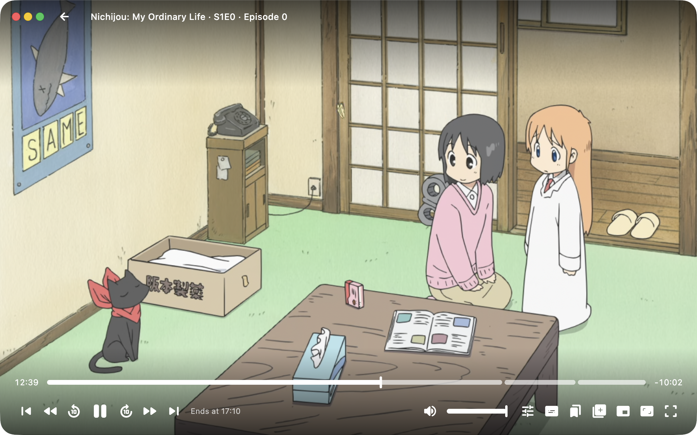
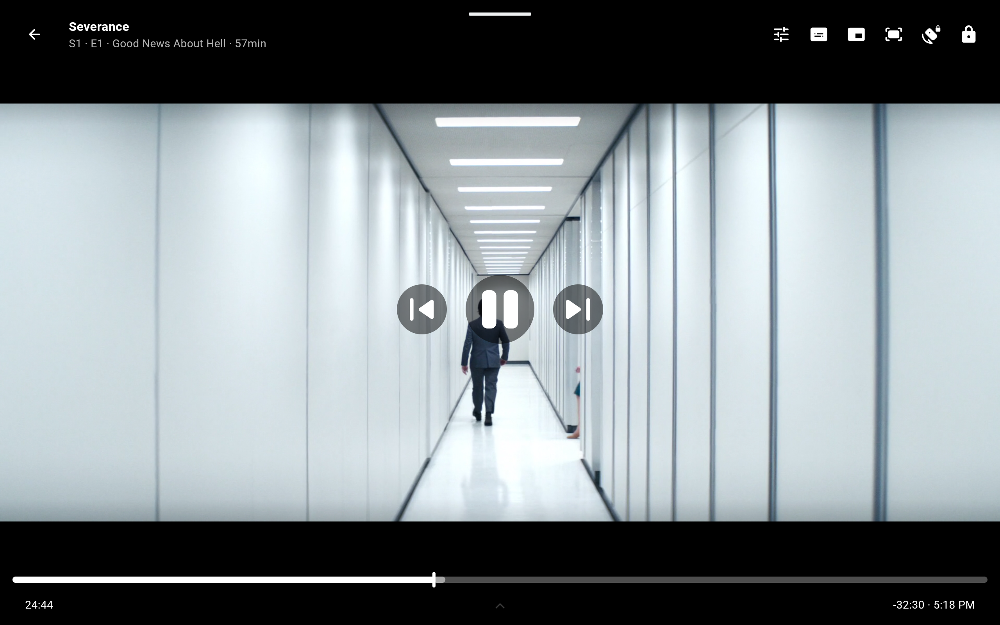
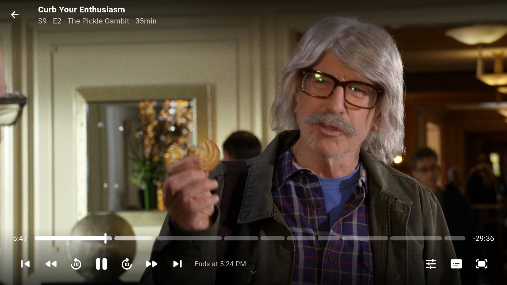

日常 · Nichijou
S1 E1 · 平凡的日常 · 结束于 17:10
4K · HDR10
mpv · 32.4 Mbps · ☁ 夸克
「因为今天是星期天，阪本先生也稍微休息一下吧。」
播放控制台 (点击右上按钮可收起)
音轨选择
日语 · FLAC 2.0 (原声)✓
日语 · AAC 2.0
字幕轨 (ASS 特效)
简日双语 · 诸神字幕组.ass✓
简体中文 · 字幕库在线
关闭字幕
播放倍速
12:39
-10:02
🔊 ▬▬▬▬○
葬送的芙莉莲 · S1E2
1080p · 夸克
☀
11:04
-12:46
现版 · Desktop Playerscreenshots/desktop-player.png

现版 · Tablet Playerscreenshots/tablet-player.png

现版 · TV Playerscreenshots/tv-player.png
